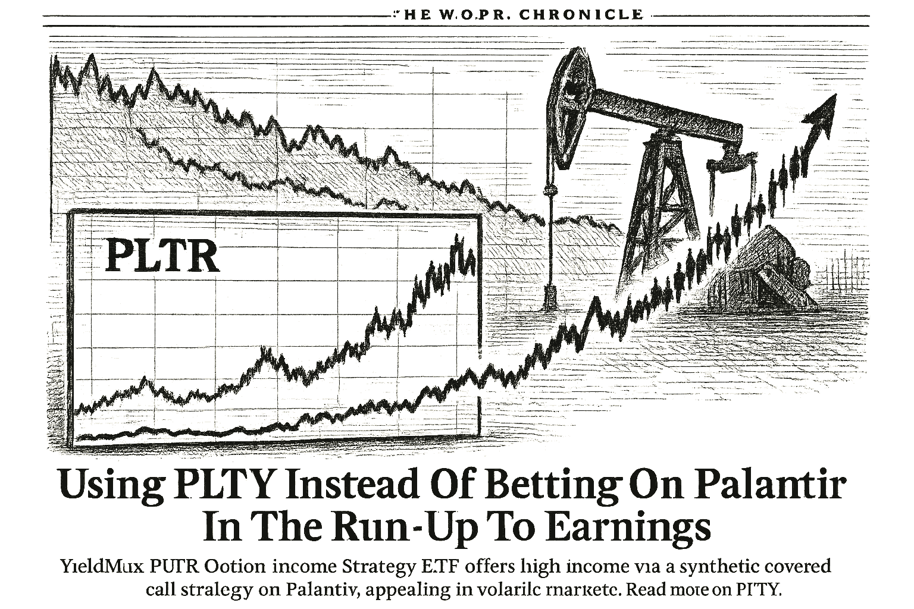

SPY
Current: $780.11Change: +15.91 (+2.08%)
Updated:
Source: yahoo_chartFreshness: fresh
YieldMax PLTR Option Income Strategy ETF offers high income via a synthetic covered call strategy on Palantir, appealing in volatile markets. Read more on PLTY.

Today's Headline: Using PLTY Instead Of Betting On Palantir In The Run-Up To Earnings
Setup: YieldMax PLTR Option Income Strategy ETF offers high income via a synthetic covered call strategy on Palantir, appealing in volatile markets. Read more on PLTY.
Primary Topic: Technology Stocks
Specific Development: Tech stocks, particularly QQQ and SPY, are experiencing significant gains as oil prices fall due to easing supply concerns from the Middle East.
Why Today Is Different: This rally comes as investors react positively to the dual impact of declining oil prices and upcoming earnings reports, particularly in the tech sector.
Secondary Topics: Oil Prices; Earnings Reports
Tone: optimistic
Sectors: Technology; Energy
Companies: Invesco QQQ Trust; State Street SPDR S&P 500 ETF
Commodities: Brent; WTI
Countries Or Regions: Middle East; United States
Macro Themes: Earnings Season; Oil Supply Dynamics
Why This Story: The interplay between falling oil prices and rising tech stocks could signal a shift in market sentiment, impacting investment strategies.
Why This Matters: Using PLTY Instead Of Betting On Palantir In The Run-Up To Earnings is the clearest current evidence-led frame for Joshua's observation-only review; missing facts remain explicit intelligence gaps.
Summary: Global markets are reacting positively to falling oil prices, with tech stocks leading the charge.
What Happened Overnight: Tech stocks have surged, while oil prices have dropped significantly due to easing supply concerns.
What Changed Materially: The decline in oil prices has shifted investor sentiment towards tech stocks.
Which Assets Sectors Are Affected: Technology stocks (QQQ, SPY) are benefiting, while oil-related assets (WTI, Brent) are under pressure.
Does It Look Like Noise Or A Real Regime Input: This appears to be a real regime input as it aligns with broader market trends and earnings expectations.
Why This Matters: Joshua can use verified cross-asset moves and deterministic risk context while keeping causation explicitly unresolved.
No high-priority earnings expectation block is supported by the current canonical snapshot.
- WOPR learning pipeline: Collecting samples
- Candidates evaluated 24h: 0
- Current gate: Evidence
- Notification ledger events in 24h: 6
- Pending orders created/canceled/filled/expired: 1/0/0/0
- Pending lifecycle interpretation: Pending-order cancellations have trackable reasons and no obvious rapid churn pattern.
- Portfolio risk: Label: High / Score: 100.0
- Latest intelligence gap report: intelligence_gap_report_2026-10-04.pdf
Why This Matters: The active gate is Evidence, so the key question is why candidates are stopping before approval, not how to force trades.
- Sentinel role: infrastructure and operational status only.
- State: ONLINE
- Last successful validation: 2026-10-06T14:12:08.234078+00:00
- Payloads accepted/rejected: 24353/0
- Node health score: 100
Why This Matters: Sentinel is ONLINE, so Joshua should use its context only to the extent the latest accepted pulse is fresh and authenticated.
CANDIDATES MOVING THROUGH JOSHUA'S INVESTMENT-REVIEW WORKFLOW
FROZEN DAILY BRIEF SNAPSHOT | 2026-10-06T14:16:16.236574+00:00
QUEUE SUMMARY | Investment Ready: 0 | Waiting for Price: 0 | Waiting for Evidence: 2 | Research Underway: 1 | Governance Hold: 5 | Monitor Only: 0
Investment-ready status: No candidates are currently Investment Ready.
#5 NVDA - Waiting for Evidence [NEW]
Joshua's Thesis: Positive thesis not yet established.
Why Waiting: Positioning gate failed.
Price: 242.07 now; 227.93 preferred entry
What Unlocks It: Clear valuation support; Evidence that the business quality matches the risk being taken; Independent evidence streams pointing the same way
Portfolio Fit: 18.3/100 — VERY LOW
Portfolio Fit Drivers: projected Technology exposure 57.2%; projected AI infrastructure exposure 57.2%; candidate amount $100 vs $75 currently allocated
Candidate Risk: 73.7/100 — HIGH
Risk Drivers: projected Technology exposure 57.2%; projected AI infrastructure exposure 57.2%; candidate amount $100 vs $75 currently allocated
Next: Positioning status must no longer be warning. Owner: Joshua.
#6 AVGO - Governance Hold [NEW]
Joshua's Thesis: Positive thesis not yet established.
Why Waiting: Governance gate has not cleared.
Price: 375.92 now; 377.20 preferred entry
What Unlocks It: Governance gate clears; Clear valuation support; Evidence that the business quality matches the risk being taken
Portfolio Fit: 18.3/100 — VERY LOW
Portfolio Fit Drivers: projected Technology exposure 57.2%; projected AI infrastructure exposure 57.2%; candidate amount $100 vs $75 currently allocated
Candidate Risk: 73.7/100 — HIGH
Risk Drivers: projected Technology exposure 57.2%; projected AI infrastructure exposure 57.2%; candidate amount $100 vs $75 currently allocated
Next: Re-evaluate after the recorded gate clears. Owner: Columbo.
#11 QBTS - Governance Hold [Moved Down 6->11]
Joshua's Thesis: Positive thesis not yet established.
Why Waiting: Governance gate has not cleared.
Price: 16.01 now; 17.52 preferred entry
What Unlocks It: Governance gate clears; Clear valuation support; Evidence that the business quality matches the risk being taken
Portfolio Fit: 0.0/100 — VERY LOW
Portfolio Fit Drivers: projected Unclassified exposure 71.5%; projected Unclassified exposure 71.5%; candidate amount $100 vs $75 currently allocated
Candidate Risk: 100.0/100 — VERY HIGH
Risk Drivers: projected Unclassified exposure 71.5%; projected Unclassified exposure 71.5%; candidate amount $100 vs $75 currently allocated
Next: Re-evaluate after the recorded gate clears. Owner: Joshua.
#12 PLTR - Governance Hold [Moved Up 13->12]
Joshua's Thesis: Positive thesis not yet established.
Why Waiting: Governance gate has not cleared.
Price: 193.15 now; 185.60 preferred entry
What Unlocks It: Governance gate clears; Clear valuation support; Evidence that the business quality matches the risk being taken
Portfolio Fit: 18.3/100 — VERY LOW ↑
Portfolio Fit Drivers: projected Technology exposure 57.2%; projected AI software exposure 57.2%; candidate amount $100 vs $75 currently allocated
Candidate Risk: 73.7/100 — HIGH ↓
Risk Drivers: projected Technology exposure 57.2%; projected AI software exposure 57.2%; candidate amount $100 vs $75 currently allocated
Next: Re-evaluate after the recorded gate clears. Owner: Columbo.
#19 DIA - Research Underway [Moved Up 25->19]
Joshua's Thesis: Positive thesis not yet established.
Why Waiting: Research evidence is still being gathered.
Price: Current price unavailable.; Preferred entry not established.
What Unlocks It: Clear valuation support; Evidence that the business quality matches the risk being taken; Independent evidence streams pointing the same way
Portfolio Fit: 18.3/100 — VERY LOW ↑
Portfolio Fit Drivers: projected ETF exposure 57.2%; projected Broad market exposure 57.2%; candidate amount $100 vs $75 currently allocated
Candidate Risk: 73.7/100 — HIGH ↓
Risk Drivers: projected ETF exposure 57.2%; projected Broad market exposure 57.2%; candidate amount $100 vs $75 currently allocated
Next: Clear valuation support; Evidence that the business quality matches the risk being taken; Independent evidence streams pointing the same way. Owner: Columbo.
#20 SPCX - Governance Hold [Moved Down 15->20]
Joshua's Thesis: Positive thesis not yet established.
Why Waiting: Governance gate has not cleared.
Price: 175.40 now; 153.06 preferred entry
What Unlocks It: Governance gate clears; Clear valuation support; Evidence that the business quality matches the risk being taken
Portfolio Fit: 0.0/100 — VERY LOW
Portfolio Fit Drivers: projected Unclassified exposure 71.5%; projected Unclassified exposure 71.5%; candidate amount $100 vs $75 currently allocated
Candidate Risk: 100.0/100 — VERY HIGH
Risk Drivers: projected Unclassified exposure 71.5%; projected Unclassified exposure 71.5%; candidate amount $100 vs $75 currently allocated
Next: Re-evaluate after the recorded gate clears. Owner: Advisory Committee.
#21 IONQ - Waiting for Evidence [Moved Down 18->21]
Joshua's Thesis: Positive thesis not yet established.
Why Waiting: Evidence quality is insufficient.
Price: 44.28 now; 42.00 preferred entry
What Unlocks It: Clear valuation support; Evidence that the business quality matches the risk being taken; Independent evidence streams pointing the same way
Portfolio Fit: 0.0/100 — VERY LOW
Portfolio Fit Drivers: projected Unclassified exposure 71.5%; projected Unclassified exposure 71.5%; candidate amount $100 vs $75 currently allocated
Candidate Risk: 100.0/100 — VERY HIGH
Risk Drivers: projected Unclassified exposure 71.5%; projected Unclassified exposure 71.5%; candidate amount $100 vs $75 currently allocated
Next: Data confidence must reach at least 34/100. Owner: Joshua.
#23 RCL - Governance Hold [Moved Down 21->23]
Joshua's Thesis: Positive thesis not yet established.
Why Waiting: Governance gate has not cleared.
Price: 283.32 now; 282.98 preferred entry
What Unlocks It: Governance gate clears; Clear valuation support; Evidence that the business quality matches the risk being taken
Portfolio Fit: 0.0/100 — VERY LOW
Portfolio Fit Drivers: projected Unclassified exposure 71.5%; projected Unclassified exposure 71.5%; candidate amount $100 vs $75 currently allocated
Candidate Risk: 100.0/100 — VERY HIGH
Risk Drivers: projected Unclassified exposure 71.5%; projected Unclassified exposure 71.5%; candidate amount $100 vs $75 currently allocated
Next: Re-evaluate after the recorded gate clears. Owner: Columbo.
Since the prior Chronicle: ANGX - Removed
Observation only. This section creates no recommendation, order, authority, or execution instruction.
- If NVDA reaches the recorded price condition <= 227.93, which recorded evidence and governance requirements would still remain?
- Which recorded governance requirement must clear before AVGO can advance?
- Which recorded governance requirement must clear before QBTS can advance?
- Which recorded governance requirement must clear before PLTR can advance?
The decline in oil prices has created a favorable environment for tech stocks, which are rallying ahead of earnings reports. This shift in sentiment could lead to increased volatility as earnings season progresses, particularly if results diverge from expectations.
Compared to: 2026-10-05
- Market weather: Balanced -> Cautious
- Top opportunity: FDX -> DELL
- Joshua gate: Still Evidence
- 2Y Treasury.last_price: 4.84 -> 4.84 (unchanged); 2Y Treasury.last_price changed 0.00% versus the prior frozen Chronicle snapshot.
- 2Y Treasury.percent_change: 0.20703933747411568 -> 0.20703933747411568 (unchanged); 2Y Treasury.percent_change changed 0.00% versus the prior frozen Chronicle snapshot.
- 10Y Treasury.last_price: 5.31 -> 5.31 (unchanged); 10Y Treasury.last_price changed 0.00% versus the prior frozen Chronicle snapshot.
- 10Y Treasury.percent_change: 0.568181818181806 -> 0.568181818181806 (unchanged); 10Y Treasury.percent_change changed 0.00% versus the prior frozen Chronicle snapshot.
- 30Y Treasury.last_price: 5.66 -> 5.66 (unchanged); 30Y Treasury.last_price changed 0.00% versus the prior frozen Chronicle snapshot.
- 30Y Treasury.percent_change: 0.5328596802841963 -> 0.5328596802841963 (unchanged); 30Y Treasury.percent_change changed 0.00% versus the prior frozen Chronicle snapshot.
- SPY.last_price: 780.15 -> 780.11 (down); SPY.last_price changed 0.01% versus the prior frozen Chronicle snapshot.
- SPY.percent_change: 2.0871499607432518 -> 2.081915728866784 (down); SPY.percent_change changed 0.25% versus the prior frozen Chronicle snapshot.
- QQQ.last_price: 761.42 -> 761.56 (up); QQQ.last_price changed 0.02% versus the prior frozen Chronicle snapshot.
- QQQ.percent_change: 3.183228761535648 -> 3.2022007507487156 (up); QQQ.percent_change changed 0.60% versus the prior frozen Chronicle snapshot.
- IWM.last_price: 283.84 -> 282.78 (down); IWM.last_price changed 0.37% versus the prior frozen Chronicle snapshot.
- IWM.percent_change: 1.7311207483602682 -> 1.3512060499623604 (down); IWM.percent_change changed 21.95% versus the prior frozen Chronicle snapshot.
The significant drop in oil prices and the positive market reaction have shifted the focus towards tech stocks ahead of earnings.
No new warnings; market conditions remain stable but watch for volatility during earnings season.
Portfolio Construction Review
Current allocation: 74.94 allocated.
Largest sector: Industrials at 66.6%.
Largest theme: Economic cycle at 66.6%.
Diversification: Concentrated (33.4).
Cash allocation: 92.5% unallocated.
Recommended exposure: DELL at portfolio-fit score 18.3.
Portfolio fit: DELL has strong standalone evidence, but it increases portfolio concentration.
Why This Matters: Portfolio Manager evaluates whether an opportunity improves this portfolio; it does not select the investment, vote, or authorize execution.
Today, the evidence gate matters more than the ticker list; Evidence is where Joshua's attention belongs.
| Can trigger trade | no |
| Can modify trade rules | no |
| Can add watch items | yes |
| Can add review questions | yes |
| Can adjust confidence notes | yes |
| Input policy | external_intelligence_plus_sanitized_internal_observations |
| External policy | The Editor-in-Chief synthesizes current world/market context where available and labels unknowns; provider/model provenance remains separate. |
| Internal policy | Joshua/WOPR/Sentinel facts are supplied as sanitized observation-only summaries. |
| Editorial model | gpt-4o-mini |
- Selected by a deterministic daily rotation through symbols already present in the persisted Chronicle snapshot.
- Next earnings: October 20, 2026 (after close); status: scheduled.
- Source: finnhub_earnings_calendar.
- Morning Kickstart: Stocks eye records as oil and Treasury yields fall
- Desk: commodity; source: Forexlive; linked symbols: none recorded.
- Published: 10/6/26 05:21 MST.
- High-impact watch: FOMC Minutes Meeting of September 15-16 - 10/7/26 11:00 MST.
- Affected assets: US equities, Treasuries, USD; source: federal_reserve_calendar.
- TSLA earnings: October 20, 2026, after close.
- Technology: 4.37% session performance; source: persisted sector ledger.
- Energy: 3.16% session performance; source: persisted sector ledger.
- Utilities: 2.52% session performance; source: persisted sector ledger.
- SPY: 2.08% recorded move; price: 780.11.
- Session: regular; catalyst status: possible; source: yahoo_chart.
- Oil price movements; why it matters: Falling oil prices could indicate economic weakness, affecting market sentiment.
- State: narrow_leadership; score: 49.00/100; advance/decline ratio: 1.98.
- Above 50-day average: 22.70%; sample: 119; provider: sentinel_sampled_breadth.
- Decision outcomes evaluated: 16; currently untestable: 0.
- Warning review: unknown 2; confidence calibration: insufficient_sample.
- Current macro regime: narrow_mega_cap_risk_on; change probability: unavailable.
- Risk dashboard: neutral (42/100); breadth: narrow_leadership; sentiment: neutral.
- Scenario board only - a current-state observation, not a forecast or execution instruction.
- Two-time U.S. Investing Championship winner and creator of the SEPA growth-trading framework.
- Published quotation: "Risk is a function of how much you can lose, not how much you can make."
- Published framework: Concentrate on fundamentally strong market leaders in established uptrends, enter only when volatility contracts into a precise low-risk setup, and keep losses small through predetermined stops and sizing.
- Committee lens: Minervini gives Joshua a precise entry-quality and risk-compression lens: a good company still needs a valid setup, controlled position risk, and clear exit rules.
- Public philosophy profile only; no participation, endorsement, or current recommendation is implied.
- If NVDA reaches the recorded price condition <= 227.93, which recorded evidence and governance requirements would still remain?
- DELL: No canonical symbol-specific material event is linked.
- Attach the missing DELL evidence before the next committee review.
- Define evidence that would confirm or retire each unresolved warning before the next review window.
- If NVDA reaches the recorded price condition <= 227.93, which recorded evidence and governance requirements would still remain?
- Which recorded governance requirement must clear before AVGO can advance?
- Which recorded governance requirement must clear before QBTS can advance?
- Which recorded governance requirement must clear before PLTR can advance?
- Evidence agenda: DELL - No canonical symbol-specific material event is linked.
- Proposed review: Broadcom and Applied Materials earnings reports; why it matters: These reports could significantly influence tech stock valuations and market sentiment.
- Canonical instruments reviewed: 24; delayed 6, fresh 18.
- Leading sources: yahoo_chart (21), treasury_official_yield_curve (3).
- Snapshot recorded: 10/6/26 07:15 MST.
Using PLTY Instead Of Betting On Palantir In The Run-Up To Earnings
Storm meter: Balanced
#5 NVDA - Waiting for Evidence [NEW]
Observation mode: observation_only
Watch: Broadcom and Applied Materials earnings reports; why it matters: These reports could significantly influence tech stock valuations and market sentiment.
Question: If NVDA reaches the recorded price condition <= 227.93, which recorded evidence and governance requirements would still remain?